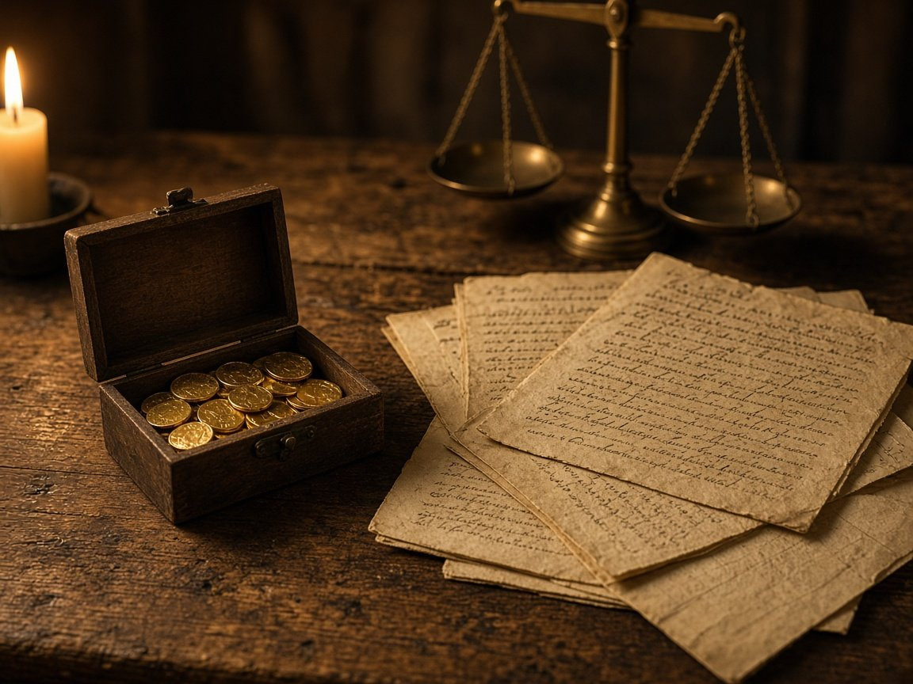
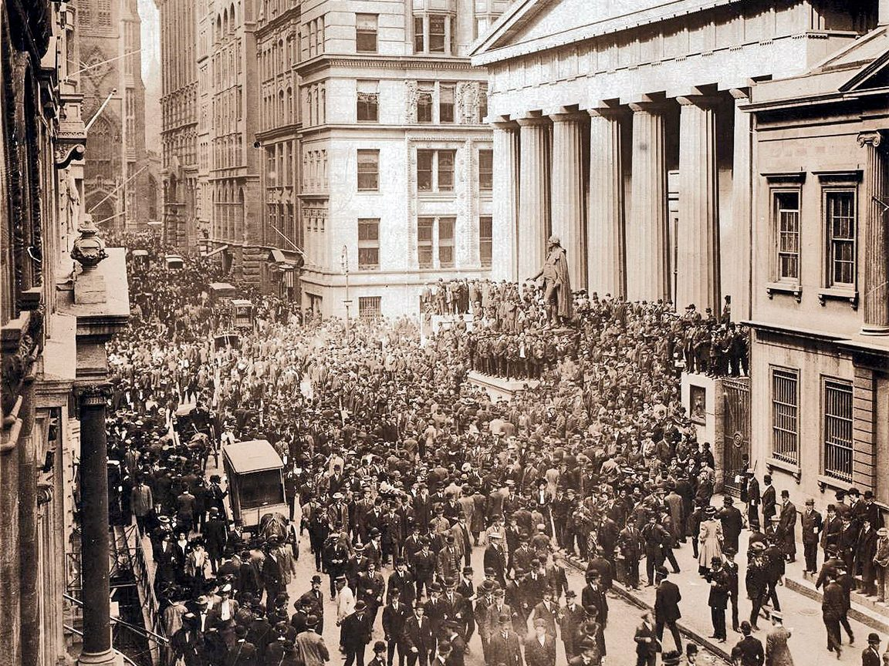

Cuando cobramos la nómina, casi nadie va corriendo a sacarla entera. La dejamos en la cuenta y damos por hecho que estará ahí el día que la necesitemos. Hace más de trescientos años, en Londres, mucha gente dejaba su oro en casa del orfebre con esa misma tranquilidad. Han cambiado las ventanillas y los papeles, pero la confianza que lo sostiene todo es la misma. Por eso merece la pena recordar cómo se puso a prueba entonces: quien conoce aquellos sustos entiende mejor los de hoy. Y ya entonces hubo días en que todos fueron a la vez a pedirlo.
En el artículo anterior dejamos a los orfebres con un descubrimiento: la gente no venía toda a la vez a retirar su oro. Y eso les llevó a emitir más papeles de los que tenían en oro.
Hoy empezamos justo ahí.
Más papeles que oro en la caja
Si cada día solo venían unos pocos a recoger lo suyo, en la caja siempre quedaba una buena parte del metal. Y aquel oro quieto, esperando a su dueño, empezó a parecer una oportunidad.
Los orfebres comenzaron a prestar una parte de lo que custodiaban. Los recibos de los clientes seguían circulando como si todo el oro estuviera en su sitio, mientras otra parte ya había salido en forma de préstamos. De este modo, llegaron a circular más papeles de los que correspondían al oro que había realmente en la caja.
A esa forma de funcionar la llamamos hoy reserva fraccionaria. Dicho de manera sencilla: se guarda solo una parte (una fracción) de lo que la gente deposita, y el resto se presta. Lo hicieron, en buena medida, sin verlo del todo y sin querer inventar un sistema nuevo. Desde allí empezamos a aplicar, casi sin darnos cuenta, un patrón de confianza.
Piensa en ello: el papel seguía prometiendo que el oro podía reclamarse. Pero aquella promesa ya no dependía solo del metal guardado. Dependía de la confianza en que, cuando alguien llegara a retirarlo, todavía habría suficiente.

El valor de aquel papel empezó a depender de la confianza.
Cuando la confianza se rompe
Mientras la gente creyera que podría recuperar su oro, los papeles seguían sirviendo para pagar. Pero ¿qué pasaba si esa creencia se rompía?
Imagina que, de pronto, se extiende un rumor y todo el mundo acude el mismo día a reclamar lo suyo. Si se ha prestado una parte de lo que se guardaba, no se puede devolver el oro de todos a la vez. Esa situación se conoce como corrida bancaria, o pánico bancario: muchas personas intentan retirar su dinero más rápido de lo que el banco puede atender.
No hace falta que el metal haya desaparecido del todo. Basta con que cunda la duda. Cuando todo el mundo quiere salir al mismo tiempo, la promesa del papel se queda sin respaldo inmediato.
La historia tiene ejemplos muy claros. En 1797, Francia declaró la guerra a Gran Bretaña y una pequeña fuerza francesa llegó a desembarcar en la isla. El miedo a una invasión se extendió y la gente corrió al Banco de Inglaterra a cambiar sus billetes por oro, algo que entonces era posible. Las reservas de oro del banco cayeron de 16 a solo 2 millones de libras. Para proteger lo que quedaba, el Gobierno ordenó al banco que dejara de pagar los billetes en oro. Aquella pausa, conocida como el periodo de restricción, duró hasta 1821.
Alguien que responda cuando todos piden a la vez
Con cada susto, fue creciendo la idea de que hacía falta una institución capaz de sostener el sistema en los peores días: un banco central, el banco de los bancos y del Estado.
Los primeros nacieron pronto. En 1668, el Parlamento de Suecia decidió fundar el banco que hoy se llama Sveriges Riksbank, considerado el banco central más antiguo del mundo. En 1694 se fundó el Banco de Inglaterra, como banco privado que hacía de banquero del Gobierno. Con el tiempo fue ganando funciones, y la Ley Bancaria de 1844 ordenó la emisión de billetes en el país y puso límites a quienes emitían los suyos propios.
Las crisis siguieron llegando. El 10 de mayo de 1866 suspendió pagos Overend Gurney, la mayor casa de descuento de la época. Lo que vino después abrió un intenso debate que ayudó a dar forma al Banco de Inglaterra como prestamista de última instancia: es decir, el que presta cuando ya nadie más quiere prestar, para que el miedo no lo arrastre todo.
En España, la historia del Banco de España se remonta al Banco Nacional de San Carlos, fundado el 2 de junio de 1782. En 1856 recibió el nombre de Banco de España, y el 19 de marzo de 1874 un decreto-ley le concedió el monopolio de la emisión de billetes para la península y las islas.

Estados Unidos fue de los últimos grandes en dar el paso. En octubre de 1907 estalló un pánico que fue la primera crisis financiera mundial del siglo XX: los ahorradores hicieron cola para retirar sus depósitos de varias entidades de Nueva York. Aquel susto impulsó una reforma, y el 23 de diciembre de 1913 el presidente Woodrow Wilson firmó la ley que creó la Reserva Federal.
Los bancos centrales nacieron para que un día de miedo no se llevara por delante la confianza de todos.
A las puertas de 1914
Así llegó el mundo al comienzo del siglo XX: con billetes que eran promesas, con más papeles que oro en las cajas y con bancos centrales encargados de que esas promesas se sostuvieran. La confianza se había convertido en la pieza que lo unía todo.
Pero detrás de cada billete seguía existiendo un compromiso: poder cambiarlo por oro. Y en el verano de 1914, con el estallido de la Primera Guerra Mundial, ese compromiso empezó a tambalearse.
Si un billete era una promesa de oro, ¿qué pasaría el día en que los propios países dejaran de cumplirla?
En el próximo artículo veremos cómo, entre 1914 y 1971, el mundo fue diciéndole adiós al oro.
Fuentes
- Sobre los orfebres de Londres en el siglo XVII, que guardaban el dinero de sus clientes y podían prestarlo: Museo del Banco de Inglaterra, «Our earliest Bank of England note», consultado el 13 de noviembre de 2026. Véase también Banco de Inglaterra, «The Bank of England note: a short history», Quarterly Bulletin, 1969, consultado el 13 de noviembre de 2026.
- Sobre qué es una corrida bancaria (bank run): Banco de Inglaterra, «Why do we regulate banks?», consultado el 13 de noviembre de 2026.
- Sobre la carrera al Banco de Inglaterra en 1797 y el periodo de restricción (1797-1821), la fundación del Banco de Inglaterra en 1694, la Ley Bancaria de 1844 y la crisis de Overend Gurney de 1866: Banco de Inglaterra, «Our History», consultado el 13 de noviembre de 2026.
- Sobre la fundación del Riksbank en 1668, el banco central más antiguo del mundo: Sveriges Riksbank, «History», consultado el 13 de noviembre de 2026.
- Sobre el Banco Nacional de San Carlos (1782), el nombre de Banco de España (1856) y el monopolio de emisión de 1874: Banco de España, «Historia del Banco de España», consultado el 13 de noviembre de 2026.
- Sobre el pánico de 1907: Federal Reserve History, «The Panic of 1907», consultado el 13 de noviembre de 2026.
- Sobre la firma de la ley de la Reserva Federal el 23 de diciembre de 1913: Federal Reserve History, «Federal Reserve Act Signed into Law», consultado el 13 de noviembre de 2026.
- Foto del pánico de 1907: Wikimedia Commons, «1907 Panic.png» (New York Public Library, dominio público), consultado el 13 de noviembre de 2026.